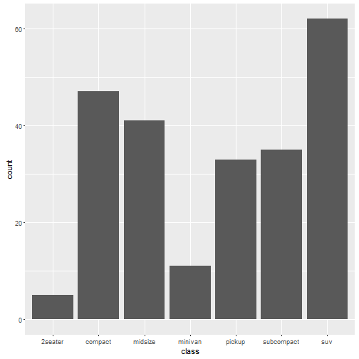
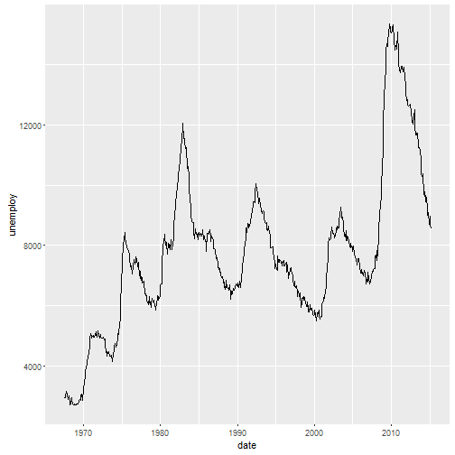
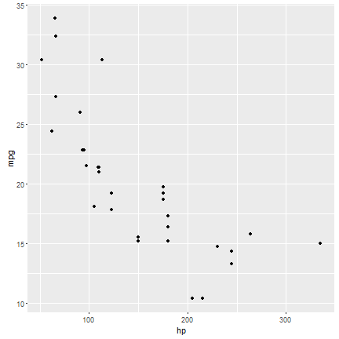
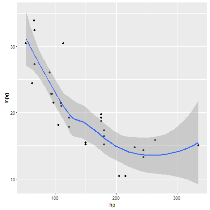
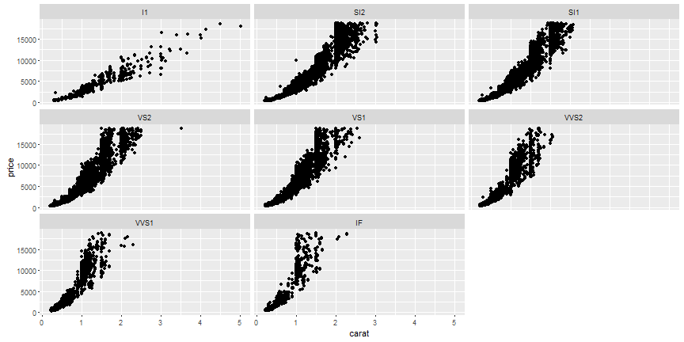
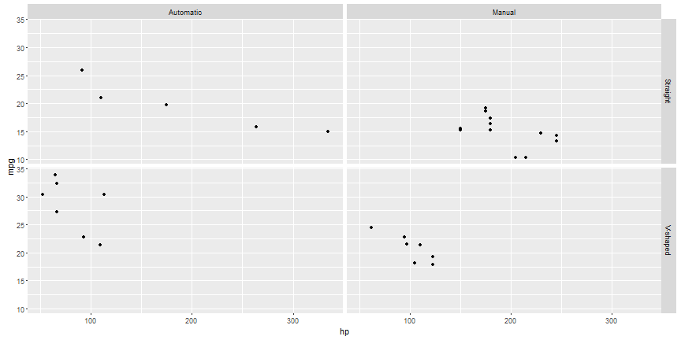

Lesson 13
Grammar of Graphics
Motivation
Motivation
"If any number of magnitudes are each the same multiple of the same number of other magnitudes, then the sum is that multiple of the sum."
Euclid, ~300 BC
\(\sum{mx} = m \sum{x}\)
Abstraction limits vocabulary, but makes thinking about, reasoning about, and communicating easier.
What is a plot?
- A plot is a set of layers
- A set of scales
- A coordinate system
- A facetting specification
What is a layer?
Layers consist of:
- Data
- Aesthetic mappings
aes - A geometric object
geom - A statistical transformation
stat - A position adjustment
position
Geometries and Aesthetics
Geometries are the shapes and lines representing data in a plot. Aesthetics are physical qualities of the geometries in the graph. The most common aesthetics are:
| Aesthetic | Description |
|---|---|
| x | position along the x-axis |
| y | position along the y-axis |
| color | color of 1D component (point, line) |
| fill | color of 2D component ("insides") |
| alpha | opacity (opposite of transparency). takes on values from 0-1 |
| shape | shape used for points |
Common geometries - Bar
ggplot(mpg, aes(class)) + geom_bar()

Common geometries - Points
ggplot(mtcars, aes(wt, mpg)) + geom_point()

Common Geometries - Line
ggplot(economics, aes(date, unemploy)) + geom_line()

What geometry is in this plot and what are its aesthetics?

First principles
ggplot() +
layer(
data = mtcars,
mapping = aes(x = hp, y = mpg),
geom = "point",
stat = "identity",
position = "identity"
)

Wordy
The last way of writing it was somewhat wordy. Instead, we can rely on default geometries and statistics. Every geom has an associated default statistic (and vice versa):
ggplot() +
geom_point(mtcars,aes(hp, mpg))

Default Geometries for Statistics:
| Graph Type | call | statistic | default geom |
|---|---|---|---|
| histogram | geom_histogram | bin | bar |
| smoother | geom_smooth | smooth | line |
| boxplot | geom_boxplot | boxplot | boxplox |
| density | geom_density | density | line |
| freqpoly | geom_freqpoly | bin | line |
Multiple layers
You can add on multiple layers with +. If you don't specify aesthetics, then the layer inherits those values in order from the main ggplot call.
ggplot(mtcars, aes(hp, mpg)) +
geom_point() +
geom_smooth()

Fixed Aesthetics
We usually think of aesthetics as being mapped from variables. However, when customizing our graphics, it's often desirable to specify fixed aesthetics. Below, x and y are being mapped from variables whereas size is a fixed aesthetic. Note that it sits outside the aes call.
ggplot(mtcars) +
geom_point(aes(hp, mpg), size = 3)

Faceting
Facets refer to different sides of an object. When graphing, facetting refers to splitting your data up into subsets and then making multiple graphs from those data. There are two faceting calls:
facet_wrap(~x)facets thexvariable, wrapping the panels to make sure they all fit in the framefacet_grid(x~y)facets thexandyvariable, gridding them so that thexvalues form the rows andyvalues form the columns- Obviously facetting only works with categorical (factor) variables
Examples of facet_wrap
ggplot(diamonds) + geom_point(aes(carat, price)) + facet_wrap(~clarity)

Example of facet_grid
ggplot(cars, aes(hp, mpg)) + geom_point() + facet_grid(vs~am)

Learning ggplot2
ggplot2 mailing list
http://groups.google.com/group/ggplot2
stackoverflow
http://stackoverflow.com/tags/ggplot2
Cookbook for common graphics
http://wiki.stdout.org/rcookbook/Graphs/
ggplot2 book
http://www.springerlink.com/content/978-0-387-98140-6/contents/